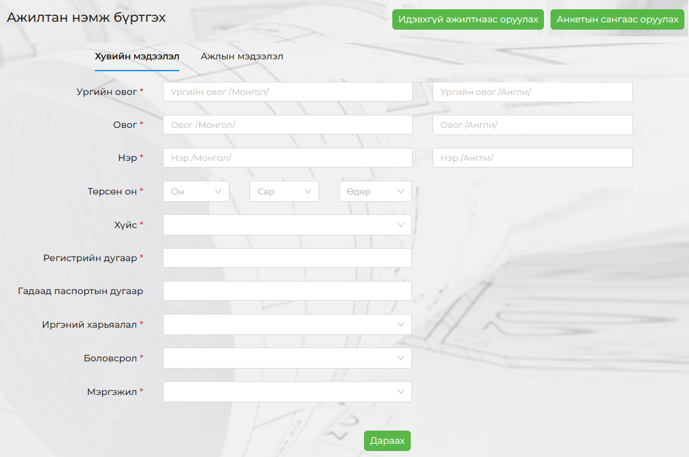
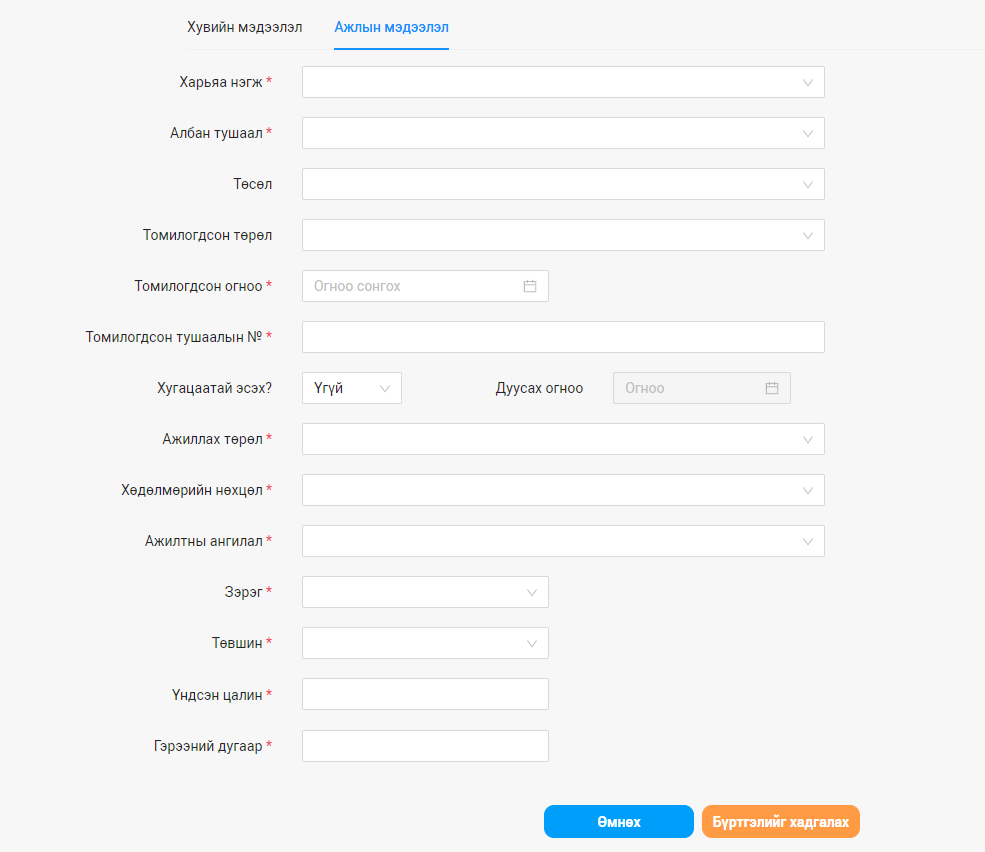
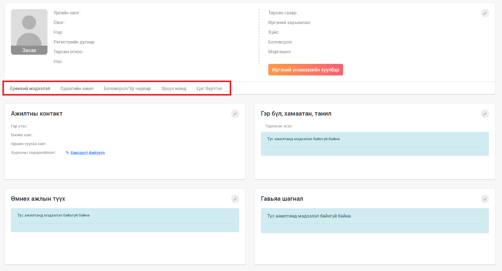
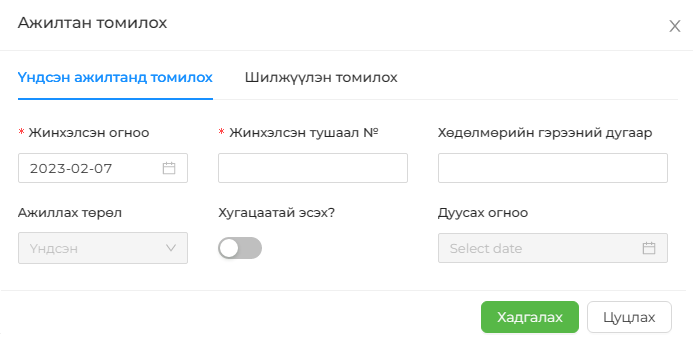
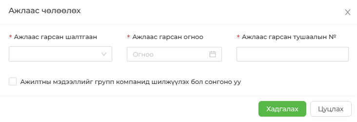

Шинэ ажилтан нэмэхэд шаардагдах сонголтуудыг Тохиргоо хэсэгт бүрэн бүртгэсний дараа ажилтан нэг бүрийн хувийн мэдээллийг оруулах боломжтой болно. Цонхны хэсэгт байрлах АЖИЛТАН НЭМЭХ сонголтыг сонгосноор дараах байдлаар үндсэн хэсэг харагдана.



| Ерөнхий мэдээлэл |
|---|
| 1. Ажилтны контакт - Ажилтантай холбоо барих мэдээлэл |
| 2. Гэр бүл, хамаатан, танил - Ажилтны гэр бүлийн байдал, гишүүдийн талаар мэдээлэл |
| 3. Өмнөх ажлын түүх - Ажилтны ажиллаж байсан байгууллагуудын мэдээлэл болон гүйцэтгэсэн албан тушаалын мэдээлэл |
| 4. Гавьяа шагнал - Ажилтны авч байсан шагналуудын мэдээлэл |
| 5. Биологийн мэдээлэл – Хувцасны размер г.м биологийн мэдээлэл |
| 6. Бичиг баримтын мэдээлэл – Нэмэлт бүртгэлийн мэдээлэл |
| Одоогийн ажил |
|---|
| 1. Ажилтны мэдээлэл - Ажилд орсон хугацаанаас хойших ажилтны мэдээлэл |
| 2. Цалин хөлс, урамшуулал - Ажилтны харьяалагдаж буй цалингийн бүлэг, нэмэгдэл бонусын мэдээлэл |
| 3. Карьерын түүх - Ажилтны туршлага түүний талаарх мэдээлэл |
| 4. Байгууллагын шагнал - Ажилтны тухайн байгууллагаас авсан гавьяа шагнал |
| 5. Зөрчил хариуцлага - Ажилтны зөрчил гаргасан талаар мэдээлэл, авсан шийтгэлийн талаарх мэдээлэл |
| 6. Хавсрах/Орлох ажлын бүртгэл – Нэмэлт албан тушаалын мэдээлэл |
| 7. Нэмэгдэл/Хангамжийн бүртгэл – цалингаас гадуур олгож буй нэмэгдлийн мэдээлэл |


| Боловсрол/Ур чадвар |
|---|
| 1. Боловсролын түүх - Ажилтны боловсрол эзэмшсэн түүх |
| 2. Мэргэшлийн бэлтгэл - Мэргэжлийн мэргэших сургалтад суусан талаарх мэдээлэл |
| 3. Хэлний мэдлэг, хэлний шалгалт - Ажилтны гадаад хэлний мэдлэгийн түвшин болон олон улсын шалгалтын талаарх мэдээлэл |
| 4. Ур чадвар - Ажилтны эзэмшсэн ур чадвар, зэргийн мэдээлэл |
| 5. Мэргэшсэн ур чадвар - Ажилтны бүрэн мэргэшсэн мэргэжлийн мэдээлэл |
| 6. Компьютерын мэдлэг - Ажилтны компьютерын программын мэдлэгийн түвшний мэдээлэл |
| Эрүүл мэнд |
|---|
| 1. Ерөнхий мэдээлэл - Ажилтантай эрүүл мэндийн ерөнхий мэдээлэл |
| 2. Эрүүл мэндийн үзлэг - Ажилтны үзлэгт орсон хугацаа, эмчийн дүгнэлтийн мэдээлэл |
| 3. Урьдчилан сэргийлэх тарилга – Байгууллагын зүгээс ажилчдад үзүүлж буй эрүүл мэндийн үйлчилгээнд хамрагдсан эсэх талаарх мэдээлэл |
| Цаг бүртгэл |
|---|
| 1. Ээлжийн амралт – Ажилтны ээлжийн амралтын мэдээлэл |
| 2. Цагийн бүртгэл - Ажилтны ажлын цагтаа багтаан ажиллаж буй эсэх мэдээлэл, Цаг бүртгэлийн системээс баталсан ирц бүртгэлийн мэдээлэл уг хэсэгт харагдана. |